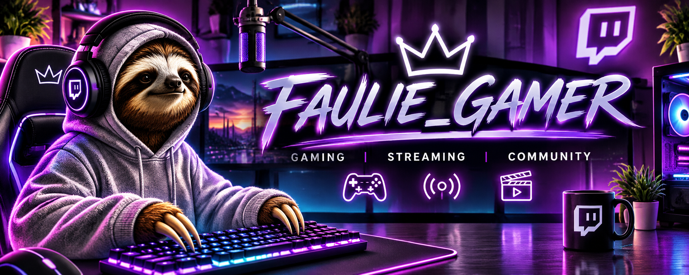
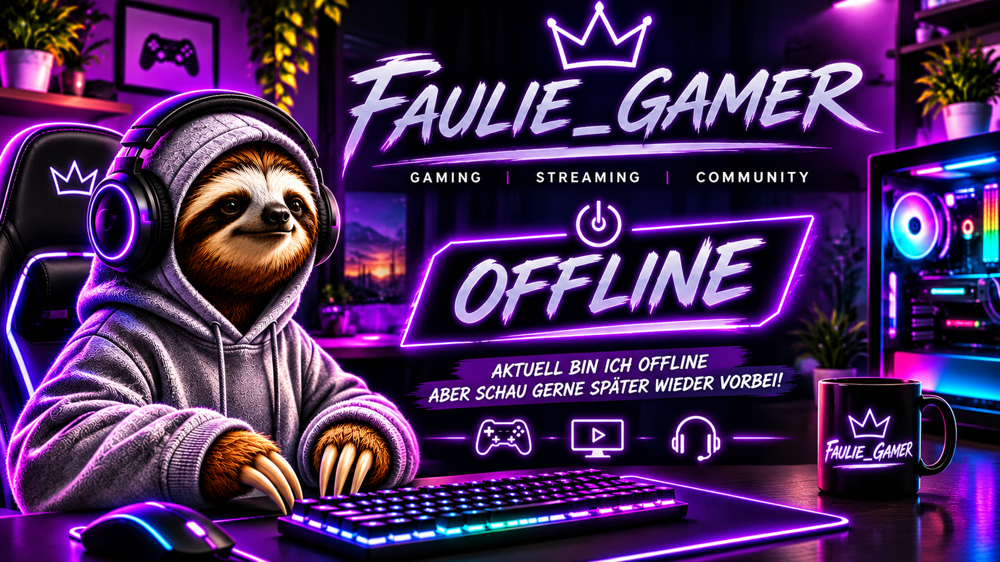

WELCOME TO JC NEON STUDIO
LEVEL UP
LEVEL UP
YOUR STREAM.
Dein persönliches Streaming-Kontrollzentrum für Chat, Sprache, Benachrichtigungen und OBS.
TWITCH-VERBINDUNG
OFFLINE
Twitch noch nicht verbunden
CHAT-TTS
AKTIV
Browser-Sprachausgabe
ALERT-SOUNDS
3
Follower · Abo · Bits
OBS-OVERLAY
1
Kombiniertes Chat-Overlay
CHAT CONTROL
TESTBEREICH
Chat & Testnachrichten
System
Willkommen bei JC Neon Studio! 💜
QUICK ACTIONS
Alert-Sounds testen

Dein Stream. Dein Branding.
Jade & Clarke · JC Neon Studio
VOICE CONTROL
Chat & Text-to-Speech
Bestimme, wie Chatnachrichten vorgelesen werden.
Sprachausgabe
Nachricht testen
Emojis bleiben im Chat sichtbar, werden aber nicht vorgelesen.
Die gewählte Stimme hängt von deinem Browser und Windows ab.
SOUND ENGINE
Follower, Abos & Bits
Deine eigenen M4A-Sounds – ohne sichtbare Videoeinblendung.
Sound-Einstellungen
Sound-Vorschau
DEINE ALERT-SOUNDS
Wähle einen Test aus.
Deine Sounds werden als Audio abgespielt.
Es wird kein Video im Stream eingeblendet.
Die Vorschau hier im Dashboard dient nur zum Testen.
Echte Twitch-Ereignisse funktionieren erst nach
Einrichtung der Twitch-Verbindung.
OBS INTEGRATION
Ein Overlay. Alles im Blick.
Eine gemeinsame Browserquelle für den Chat. Sichtbare Alerts kannst du bei Bedarf zuschalten.
LIVE PREVIEW
VORSCHAU
Kombiniertes Stream-Overlay
Anzeige & Position
Overlay testen
Teste direkt im Dashboard, ohne ein zusätzliches Browserfenster öffnen zu müssen.
Die drei Overlay-Alert-Buttons testen die sichtbaren
Animationen. Deine Audio-Tests findest du unter
„Stream-Alerts“.
Für OBS benötigst du eine Browserquelle mit
overlay.html?obs=1.
Die zuverlässige Live-Synchronisierung mit OBS
wird noch eingerichtet.
PERSONALIZE YOUR STUDIO
Studio-Einstellungen
Deine Einstellungen. Dein Design. Deine Kontrolle.
Profil & Personalisierung
Diese Felder dienen der Personalisierung.
Sie melden dich noch nicht bei Twitch an.
Das automatische Speichern ergänzen wir in app.js.
Darstellung
Twitch-Verbindung
Nicht verbunden
Twitch-Anmeldung noch nicht eingerichtet
Daten & Einstellungen
Deine Studio-Einstellungen sollen automatisch gespeichert und beim nächsten Öffnen wieder geladen werden.
Die Export- und Importfunktion wird im nächsten
JavaScript-Update ergänzt. So kannst du deine
Konfiguration auch beim Browserwechsel sichern.
Hinweis: Stream-Schlüssel, Twitch-Passwörter und
Client-Secrets gehören niemals in öffentliche
HTML- oder JavaScript-Dateien.